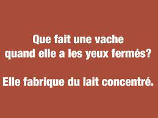

Quelques exemples



Dans la vie, être drôle est important, voire même nécéssaire à une vie sociale, familliale, professionnelle et amoureuse épanouie. C'est pour cette raison que ce site a été créé. Nous sommes là pour vous aider.
sourcesCommençons par un bref historique :
Caricature de Léopold Ier disant à Louis-Philippe Ier : « Mon beau-père, vous êtes un vieux blagueur !… » (Traviès, 1834). Issue de la farce théâtrale et de la farce au sens de canular, qui sont des histoires jouées pour faire rire souvent aux dépens de quelqu'un, la blague est simplement racontée : c'est une histoire drôle.
Selon Paul McDonald (en) qui a recherché avec son équipe les plus vieilles blagues du monde et publié dix d'entre elles pour l'université de Wolverhampton, la plus ancienne date de 1 900 ans avant notre ère et a été trouvée dans des textes sumériens : « ça n'était pas arrivé depuis la nuit des temps : une jeune femme s'est retenue de péter sur les genoux de son mari ».
L'utilisation du mot « blague » dans ce sens serait née sous Napoléon Ier dans le cercle militaire8. C'est le personnage imaginaire Robert Macaire qui représente le blagueur type au xixe siècle ; le drame burlesque qui porte son nom popularise la réplique de Macaire au baron de Wormspire : « Mon beau-père, vous n'êtes qu'un vieux blagueur ».